“The Alsatian Mafia” is a fraught phrase. Is it the latest PBS crime series? A new challenge for the beleaguered Chicago police force? Perhaps an Oscar-nominated film from an avant-garde French filmmaker? Happily, for Chicagoans, it’s none of the above, but a delightful brotherhood of French-born players in the world of Chicago food, who bring both the taste of their homeland and new ideas to tease and please our palates.
The Alsatian Mafia is the jocular term Pierre Zimmerman, owner of the La Fournette bakery, invented for himself and Dominique Tougne, the chef/owner of Chez Moi and French Quiche, as well as others born in the same region of France. Zimmerman supported it with a logo, coasters, and even T-shirts. The phrase could also apply to Jacquy Pfeiffer, chef/founder of the French Pastry School, as well as the illustrious Jean Joho, chef/owner of Chicago’s former Michelin-starred Everest restaurant, the Eiffel Tower restaurant in Las Vegas among others, and partner in Lettuce Entertain You Restaurants. It’s shorthand for the story of ambitious immigrants, mutual support, award-winning skills, and delighted customers.
Their common denominator is Alsace, the narrow territory on the eastern border of France along the Rhine River, bordering both Germany and Switzerland. For over 300 years, the territory or parts of it were wrenched back and forth under the control of Germany (and its predecessors) and France, thanks to the 30 Years War, the Franco-Prussian War, World War I, and World War II, finally reverting to French control in 1945. Alsace has its own Germanic language, but accented French is the primary language spoken today. German food traditions are evident in hearty dishes featuring choucroute (sauerkraut), pork, potatoes, and beer bread. French influences can be detected in foie gras and tarte flambee. Alsatian wines and beers are internationally heralded.
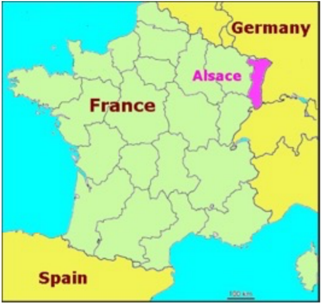
Alsatian chefs have brought to Chicago their determination to succeed, their work ethic, their European charm, and perhaps most significantly, their willingness to adapt. I first learned about the “mafia” tag from Chef Tougne. I often stop for coffee with a friend after our morning walks at the French Quiche, Tougne’s café. I complimented him on the bread he serves at Chez Moi which I knew came from La Fournette, a café, and bakery on Wells Street. He mentioned that the owner, Pierre Zimmerman, was also from Alsace. I jokingly asked him if there was an Alsatian mafia, and much to my surprise, he replied, “yes!” Not only, he told me, does Pierre call himself part of Chicago’s Alsatian Mafia, but he even designed its insignia, the Chicago skyline with the addition of the Strasbourg (Alsace) cathedral (not to scale, Tougne assured me).
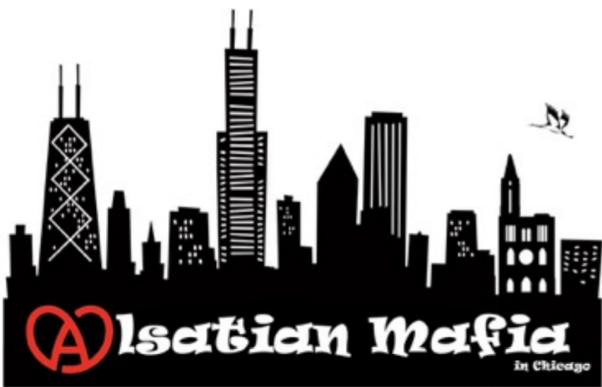 x |
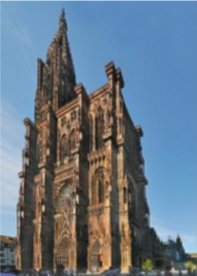 Strasbourg cathedral |
Specific opportunities drew each of these chefs to Chicago. Joho was the first to arrive in 1984, recruited to re-open the legendary Maxim’s on the Gold Coast. Fellow Alsatians would arrive in the 1990s. Pfeiffer was attracted by a top position at the Sheraton Hotel in 1991. Within a year, Tougne would be recruited to run Bistro 110 on Pearson, at the same time Zimmerman was commuting from France to teach bread making at the French Pastry School. Each would pursue differing career paths, connecting and supporting each other along the way. Today, we’ll meet Chef Tougne. I will explore the others’ divergent directions in subsequent articles.
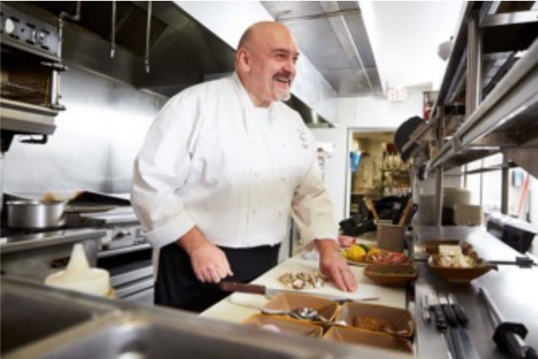
Tougne is technically the least “Alsatian” in the group, having only been born in Haguenau, Alsace, north of Strasbourg, where his father was stationed in the French air force. He would spend his formative years in southwest France, near Bordeaux. He gravitated early to a career in the kitchen, starting with an apprenticeship at age 14. “I always liked food – the smell, texture…the sound, the flavor, the touching…all your senses [are engaged],” Tougne noted. Culinary school was his obvious choice. The teenaged Tougne attended the Ecole Culinaire de Blois in the Loire Valley. His school internships were in Paris, at the Intercontinental Hotel and the Hotel Nikko kitchens. He discovered that front-of-the-house positions were not for him. The kitchen was where he felt at home, thanks to Chef de Cuisine Jacques Senechal (formerly of the famed Tour L’Argent) at the Nikko. “He was the most wonderful chef; he changed my life,” Tougne said, “We were family.” This was not the horrific environment Anthony Bourdain
described in Kitchen Confidential.
After a year of obligatory military service, Tougne briefly opened a small restaurant with his brother in Bordeaux; it did not survive. After teaching in a culinary school, he returned to Paris and was hired by the legendary chef Joel Robuchon, known as the “Chef of the Century.” Tougne remembers a very confusing interview with Robuchon and his head chef. Robuchon spoke to Tougne only indirectly through his head chef. At the end of the meeting, Robuchon suddenly stood up, turned to Tougne, and said, “Okay, I take you, you come in Monday at 9 am,” and then turned back to his head chef saying, “Alsatians are very good workers, are they not?”
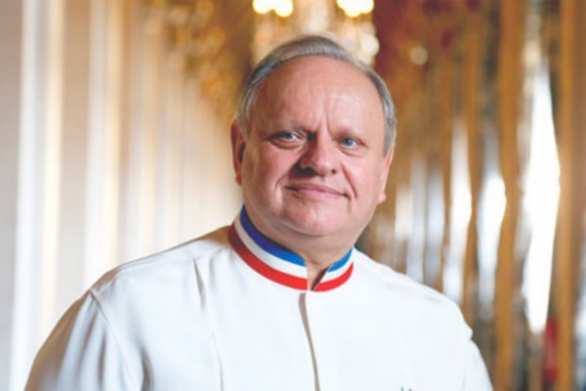
In 1989, with Robuchon’s retirement, the team scattered. Tougne was ready to try America. “I arrived at JFK, and I had no clue what I was going to do… I didn’t speak English!” He had two bags, $300-$400 and a tourist visa. Unprepared for the cold weather, he stayed at the YMCA near the United Nations and found a French restaurant where to his surprise hiring for the Atlanta Olympics was underway. Unhappy with the job he soon got in Atlanta, Tougne was luckily found by a headhunter from Chicago. A meeting and trial tastings for restauranteur Larry Levy earned Tougne the top chef position at Chicago’s Bistro 110. Just one problem remained: Tougne had only a tourist visa. The Levy organization went to work.
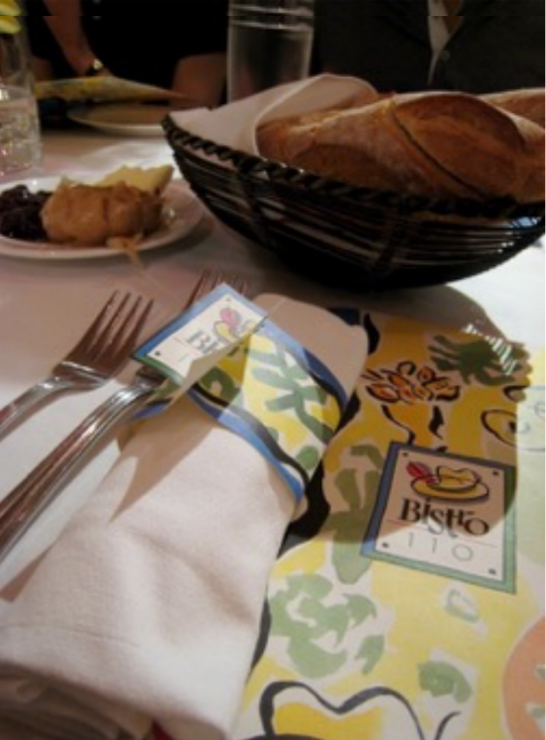
Thanks for the help from US Senator Carol Mosely Braun, Tougne was granted the highly desired 0-1 Visa, created, according to the official website, “… for the individual who has extraordinary ability in the sciences, arts, education, business, or athletics.” For the next 15 years, Tougne would justify that description and solidify his position in Chicago’s food hierarchy. Through a series of charity events, he began to connect with fellow Chicago chefs, including Jean Joho, whose Everest restaurant was one of Chicago’s best. Joho’s visit to Bistro 110 was an important stamp of approval.
Bistro 110 gave Tougne the opportunity to absorb the American restaurant business. “I had time to learn about the food, the clientele, the purveyors,” and he learned about American diners in particular. “As much as you want to be French, you have to remember you are in the USA…I find that American people are extremely educated about France. They know Versailles better than most French people. We have to respect their perception, that’s maybe not true anymore in France,” Tougne discovered.
When Bistro 110 closed in 2011, Tougne, now experienced in the foodways of Chicago, took over the former Café Bernard on North Halsted Street and opened Chez Moi, offering a traditional French menu. He had grown his network of French chefs through the Vatel Club, an international organization of French culinary professionals. Tougne decided to continue his own gastronomic education and took courses in sorbet and ice cream from Jacquy Pfeiffer, an Alsatian chef and Vatel Club member who had opened his French Pastry School in 1995. There he met Pierre Zimmerman who was coming to the pastry school from Alsace several times a year to teach breadmaking.
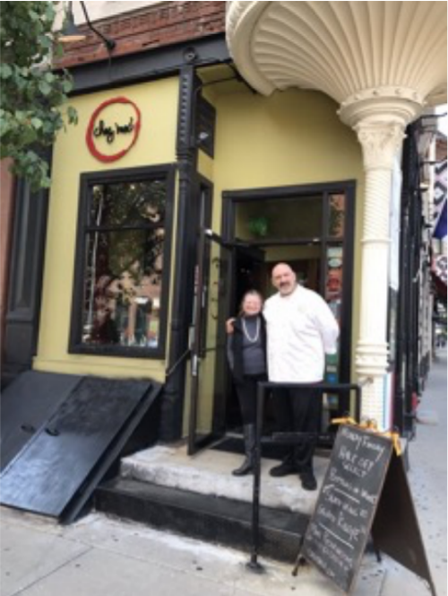 Chez Moi |
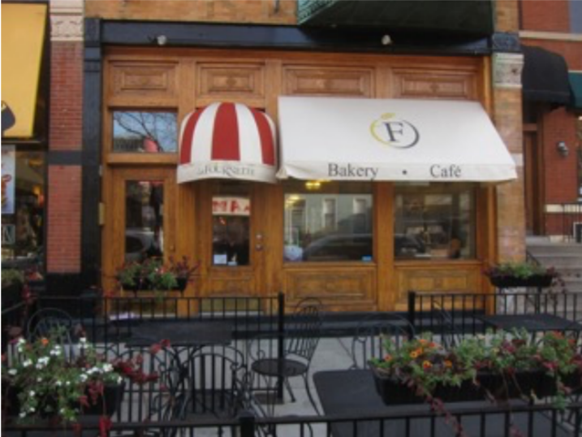 La Fournette |
When Zimmerman opened his Chicago bakery, La Fournette, in 2011, Tougne was his first customer, buying bread and pastries for his new restaurant Chez Moi. Tougne still has his first invoice, La Fournette’s #1. He also has invoice #100 and continues to serve La Fournette bread and pastries. Another Alsatian relationship was with Francis Staub, the owner of the eponymous Alsatian cookware company, with whom Tougne helped initiate importing Staub equipment into the US.
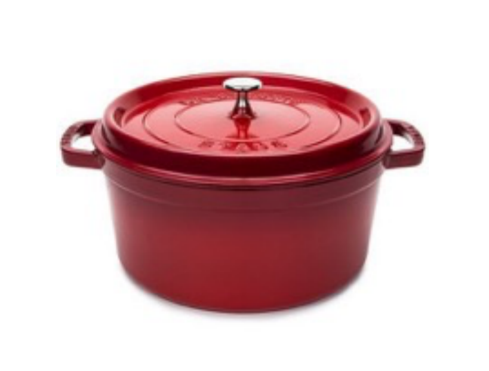 Staub cast iron cookware |
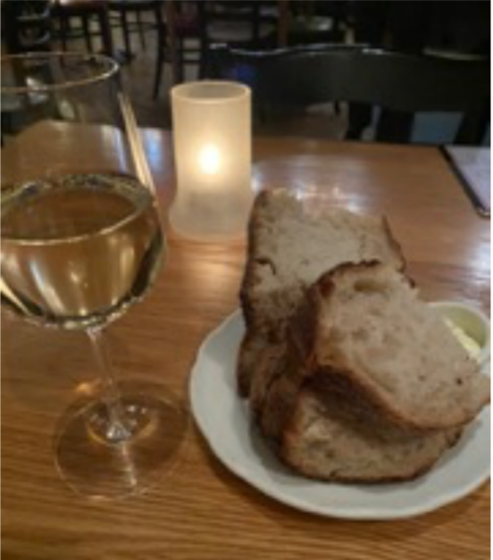 Crusty bread from La Fournette |
Eating at Chez Moi when the temperature dips below 20 degrees feels like being wrapped in a warm blanket. Tougne redecorated the dining room with French artifacts, like vintage paintings from a Bordeaux antique shop, a French movie poster, and sparkling chandeliers in thin metal cages. French popular music plays softly in the background.
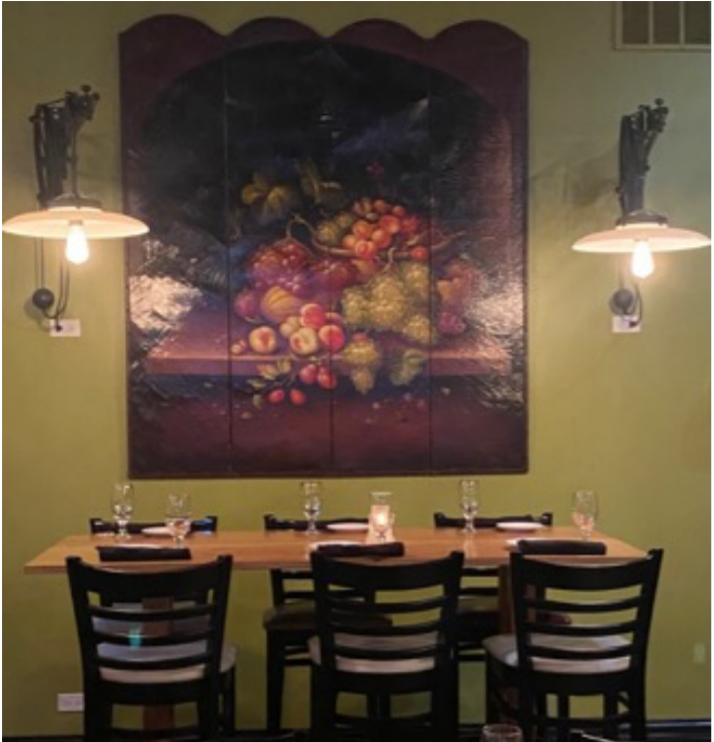 |
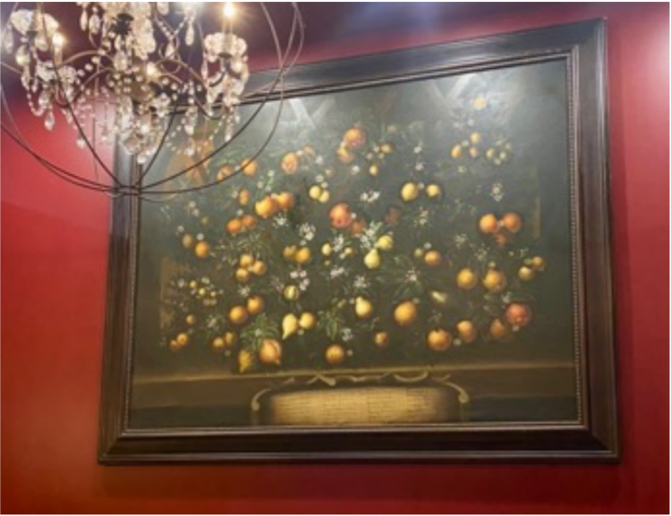 |
In this hospitable environment, the menu features what one might call French comfort food. “I’m always surprised by the quantities of frogs legs, escargot and beef Bourguignon [people order], the classics of French cuisine, because that’s what people want,” Tougne observes.
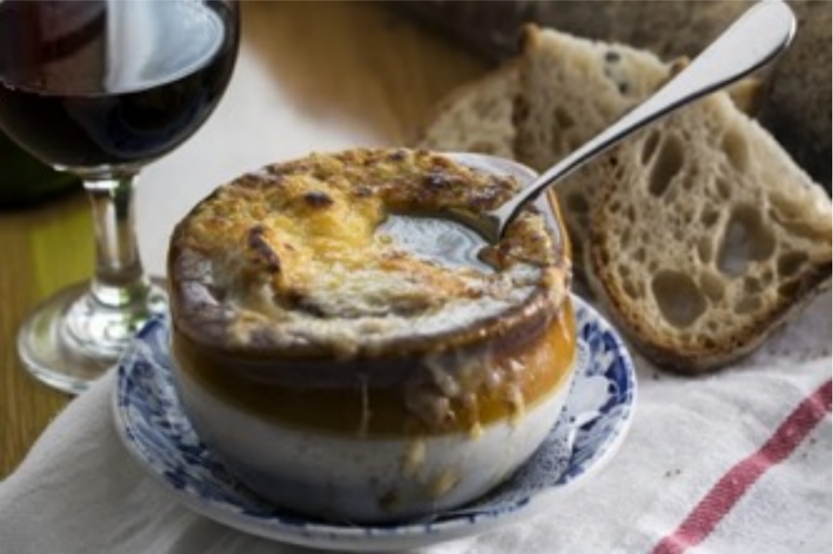 French Onion Soup Photo: Yelp |
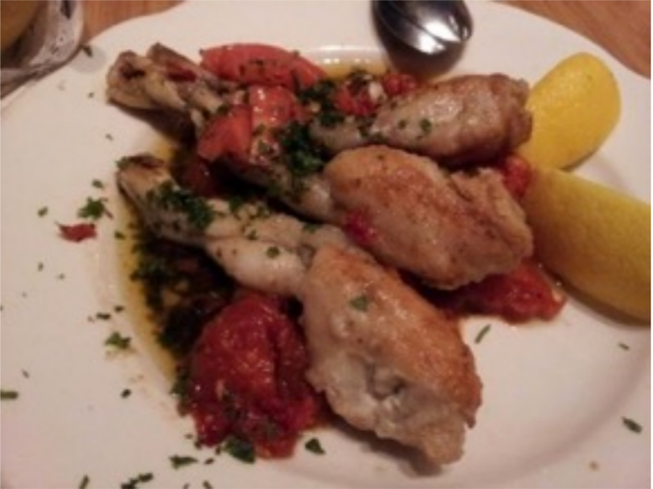 Frogs’ legs Photo: Yelp |
Chez Moi occupies a historic 19h century building. Tougne’s tour of the basement revealed ample storage space. He related that the lower level had once been a speak-easy during Prohibition, evidenced by an uneven ceiling where a stairway may have once been, a terrazzo floor, tin ceiling tiles, and a hidden door behind the furnace that led to a tunnel for an easy escape from raiding authorities. He also pointed out windows below ground level, no doubt indicating that Halsted, like many other low-lying Chicago streets, had been raised in the mid-1800s to accommodate drainage when the city’s sewer system was installed.
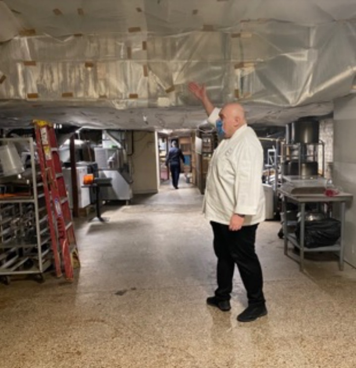 Chez Moi’s full basement |
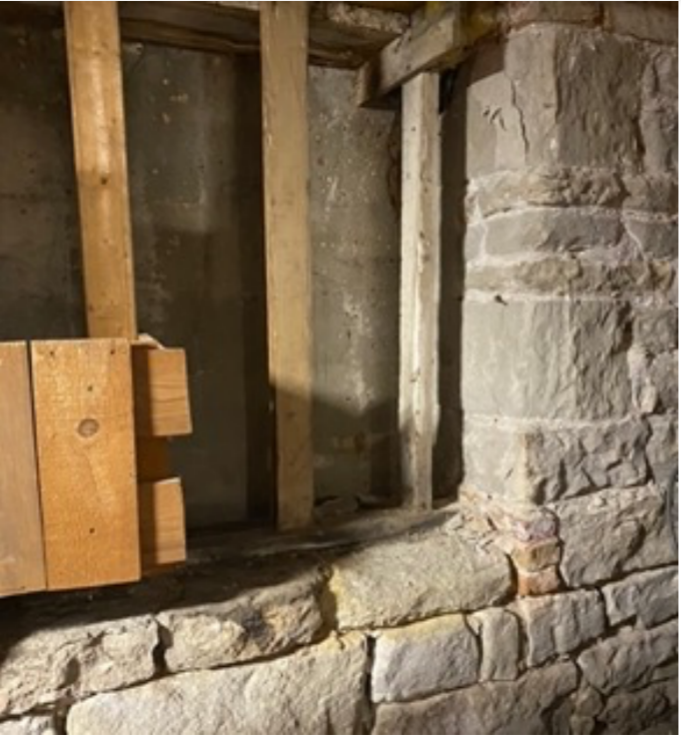 Below-ground window openings |
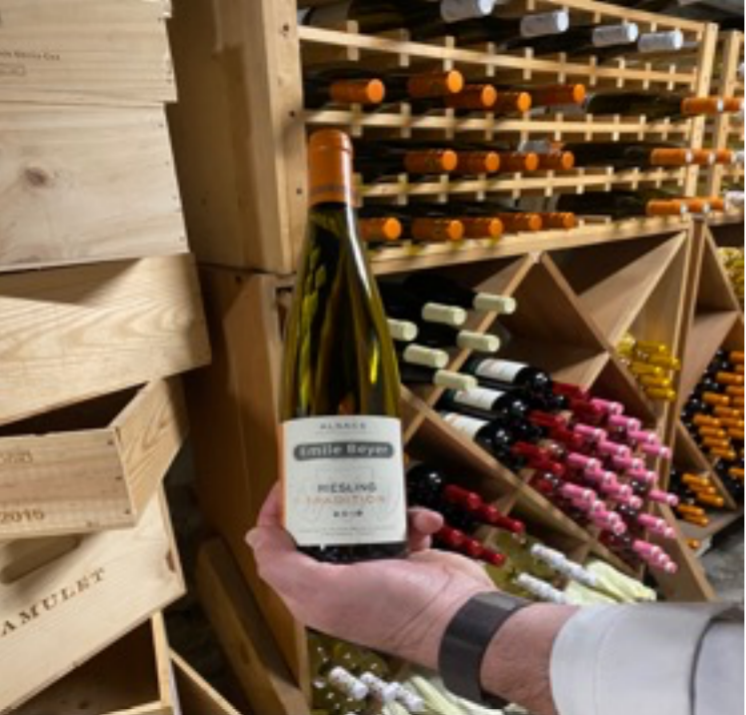
When Covid hit Chicago in March of 2020, Tougne had already committed to open a café a block and a half north of Chez Moi. “My first thought was it was going to be a couple of months…then everything went berserk… How are we going to protect our employees? The first thing we did was to set up the tables outside and to reorganize the schedule for carry-out.” Outdoor eating was possible along with Dickens for Chez Moi and in a garden behind French Quiche. He was able to avoid layoffs. “People were eating outside into November…with their coats and hats…We tried to be creative and during the holidays offer what people find festive.”
“We decided to open French Quiche Friday the 13th 2020…in November. It was the perfect day to open; nothing else could go wrong. With French Quiche we could keep people working.”
Chez Moi and French Quiche have survived. The cafe has the same French charm as Chez Moi, with modern portraits of French cultural heroes Colette and Proust (plus Chef Tougne and his general manager, Chad Bertelsman) created by Chicago artist David Lee Csicsko and antiques like the green enameled Belgian stove.
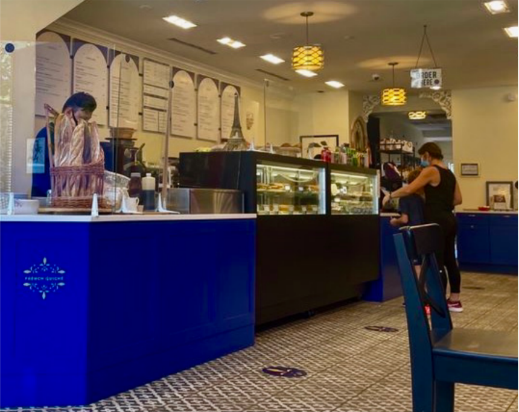
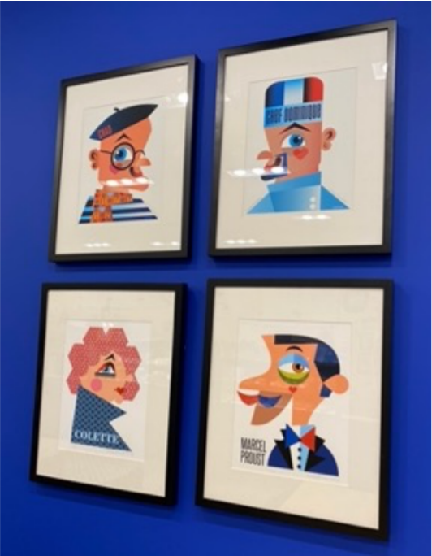 Csicsko portraits |
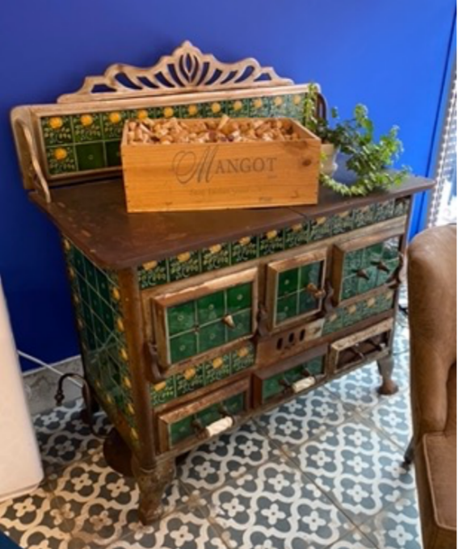 x |
Tougne’s success can be summed by customer Emilie Kraft, French by birth, who told me as she sipped her coffee, “It’s always nice to have a place you can get French food that’s authentic in the neighborhood…the croissants are very flakey…you can tell.”
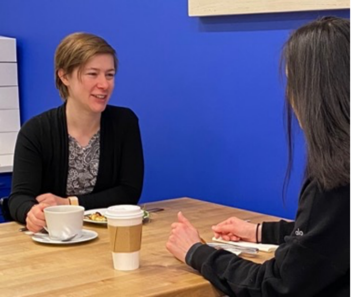 A satisfied customer! |
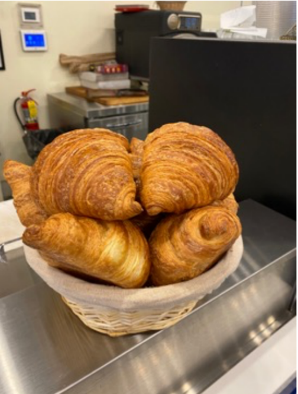 x |
In a future article, we’ll go behind the scenes at La Fournette to meet chef Pierre Zimmerman, the source of the flakey croissants, and explore another link in the Alsatian connection.